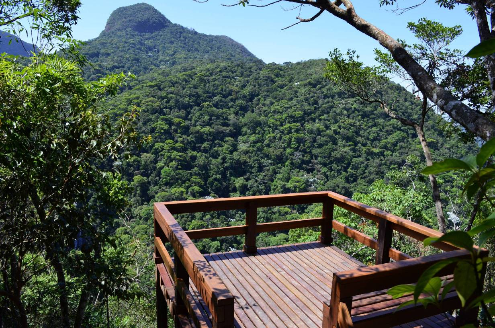
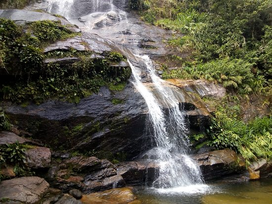
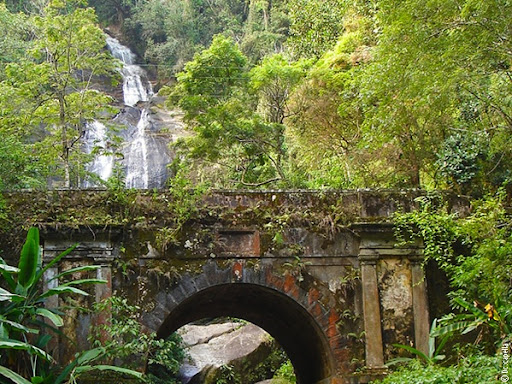

Home
Pão de Açúcar
Corcovado
Praias
Floresta da Tijuca

Uma das maiores florestas urbanas do mundo, foi criada em 1861 pelo imperador Pedro II para reflorestar a área atingida pelo desmatamento causado pelo cultivo de cana e café. Este setor do Parque Nacional da Tijuca reúne atrativos como o Pico da Tijuca, o Pico do Papagaio, a Cascatinha Taunay. Esta área preservada de Mata Atlântica é bastante procurada por cariocas e turistas para a prática de atividades físicas, passeios e caminhadas. Pássaros, plantas nativas e árvores frutíferas compõem a flora e a fauna da Floresta da Tijuca.

Ponto mais alto do Parque Nacional da Tijuca, com 1022 metros, o Pico da Tijuca é facilmente acessado por uma trilha que começa na Estrada da Cascatinha, no Alto da Boa Vista. Embora pareça difícil chegar ao topo deste que é o segundo pico mais alto da cidade, a trilha pouco íngreme torna o percurso agradável mesmo para os iniciantes na prática de esportes de aventura. Do topo do Pico da Tijuca, o visitante pode admirar uma visão panorâmica da cidade, da Zona Norte à Zona Sul, incluindo ainda a Baixada Fluminense, a Zona Oeste, o Centro do Rio e a ponte Rio-Niterói.

Outro atrativo da floresta é o Centro de Visitantes do Parque Nacional da Tijuca, que possui uma exposição permanente chamada “Uma Floresta na Metrópole”. A exposição é didática e interativa e objetiva fomentar o uso consciente das áreas e recursos de uso público, além de abordar a trajetória da área que hoje constituiu o Parque Nacional da Tijuca em três etapas: Mata Original, Intervenção Humana e, finalmente, um Parque.